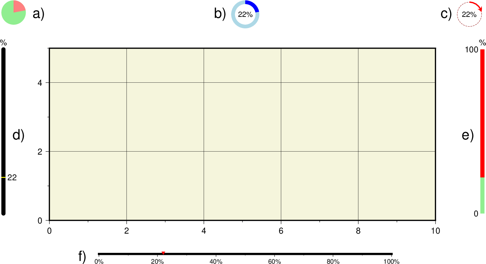
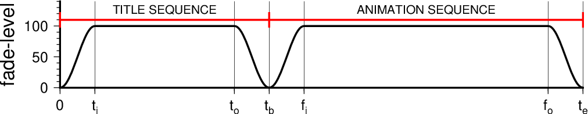

movie
movie(main; pre=nothing, post=nothing, kwargs...)Description
movie module can generate GMT animation sequences using a single-plot script that is repeated for all frames, with some variation using specific frame variables. The module simplifies (and hides) most of the steps normally needed to set up a full-blown animation job. Instead, the user can focus on composing the main frame plot and let the parallel execution of frames and assembly of images into a movie take place in the background. Individual frames are converted from PostScript plots to lossless, transparent PNG images and optionally assembled into an animation (this last step requires external tools that must be present in your path; see Technical Details below). For opaque PNG images, simply specify a background color via -G.
Required Arguments
mainscript This argument can be one of: (1) The name of a Julia function containg GMT.jl commands that makes the frame-dependent plot. (2) Name of a stand-alone GMT.jl script that makes the frame-dependent plot. The function or script may access frame variables, such as frame number and others. Parameters that can be accessed are discussed below.
C or canvas : – canvas=...
Specify the canvas size used when composing the movie frames. You can choose from a set of preset formats or specify a custom layout. The named 16:9 ratio formats have a canvas dimension of 24 x 13.5 cm or 9.6 x 5.4 inch and are (with pixel dimensions given in parenthesis):- 4320p (7680 x 4320), 2160p (3840 x 2160), 1080p (1920 x 1080), 720p (1280 x 720),
- 540p (960 x 540), 480p (854 x 480), 360p (640 x 360), and 240p (426 x 240).
We also accept 8k or uhd-2 to mean 4320p, 4k or uhd to mean 2160p, and hd to mean 1080p. The recognized 4:3 ratio formats have a canvas dimension of 24 x 18 cm or 9.6 x 7.2 inch and are (with pixel dimensions given in parenthesis):
- uxga (1600 x 1200), sxga+ (1400 x 1050), xga (1024 x 768),
- svga (800 x 600), and dvd (640 x 480).
Note: Your
PROJ_LENGTH_UNITsetting determines if movie sets you up to work with the SI or US canvas dimensions. Instead of a named format you can request a custom format directly by giving width x height x dpu (no spaces arround the x), where dpu is the dots-per-unit pixel density (pixel density is set automatically for the named formats).N or name : – name=...
Determines the name of the final movie file and a sub-directory with frame images (but see work_dir). Note: If the subdirectory exist then we exit immediately. You are therefore required to remove any old directory by that name first. This is done to prevent the accidental loss of valuable data.T or frames : – frames=(range=..., nframes=..., first=..., tagwidth=..., split_words=...)
Either specify how many image frames to make (ex frames=30), create a one-column data set width values from min to max every inc (ex frames=range(min,max,inc), append n_frames="" if inc is number of frames instead), or supply a file with a set of parameters, one record (i.e., row) per frame (ex frame= timefile). The values in the columns will be available to the mainscript as named variables MOVIE_COL0, MOVIE_COL1, etc., while any trailing text can be accessed via the variable MOVIE_TEXT. Append split_words="" to split the trailing string into individual words that can be accessed via variables MOVIE_WORD0, MOVIE_WORD1, etc. By default we use any white-space to separate words. Use split_words=str to select another character(s) as the valid separator(s). The number of records equals the number of frames. Note that the background script is allowed to create timefile, hence we check for its existence both before and after the background script has completed. Normally, the frame numbering starts at 0; you can change this by appending a different starting frame number via first=.... Note: All frames are still included; this modifier only affects the numbering of the given frames. Finally, tag_width=... can be used to set the tag width of the format used in naming frames. For instance, name_000010.png has a tag width of 6. By default, this is automatically set but if you are splitting large jobs across several computers then you must use the same tag width for all names.
Optional Arguments
A or gif : – gif=(loop=..., stride=...)
Build an animated GIF file. You may specify if the movie should play more than once (i.e., loop=N) and if so append how many times to repeat [default is infinite]. If a video product is also selected (format) then you can limit the frames being used to make the GIF file. Append stride=stride to only use every stride frame, with stride being one of a fixed set of strides: 2, 5, 10, 20, 50, 100, 200, and 500.D or frame_rate : – frame_rate=...
Set the display frame rate in frames per seconds for the final animation [24].-E or titlepage : – titlepage=(script=..., duration=N, fade=..., fill=...)
Give a titlepage script that creates a static title page for the movie (i.e. titlepage=(script=Fun|sc.jl,)) [no title]. Alternatively, titlepage can be a PostScript plot (titlepage=(script="psfile.ps", )) of dimensions exactly matching the canvas size set in canvas. You control the duration of the title sequence with duration and specify the number of frames (or append s for a duration in seconds instead, e.g. duration="10s") [4s]. Optionally, supply the fade length via fade=N (in frames or seconds [1s]) as well [no fading]; Use fade="iN" and/or fade="oN" to specify one-sided fading or to give unequal fade intervals [Default is same duration for both]. The fading affects the beginning and end of the title page duration. We fade from and to black by default; append fill=color to use another terminal fade color.F or format : – format=(format=..., transparent="", options=...)
Set the format of the final video product. Choose either mp4 (MPEG-4 movie) or webm (WebM movie). You may optionally add additional FFmpeg encoding settings for this format via the options=... modifier (in quotes if more than one word). If "none" is chosen then no PNGs will be created at all; this requires cover_page. Choose transparent=true to generate transparent PNG images [opaque].G or fill : – fill=color | fill=(fill=color, pen=pen)
Set the canvas color or fill before plotting commences [none]. Optionally, append pen=pen to draw the canvas outline with pen [no outline]. See Setting color and Pen attributes for extend color and pen selections.H or scale : – scale=factor
Given the finite dots-per-unit used to rasterize PostScript frames to PNGs, the quantizing of features to discrete pixel will lead to rounding. Some of this is mitigated by the anti-aliasing settings. However, changes from frame to frame is outside the control of the individual frame rasterization and we find that, in particular, moving text may appear jittery when seen in the final animation. You can mitigate this effect by selecting a scale factor that, in effect, temporarily increases the effective dots-per-unit by factor, rasterizes the frame, then downsamples the image by the same factor at the end. The larger the factor, the smoother the transitions. Because processing time increases with factor we suggest you try values in the 2-5 range. Note that images can also suffer from quantizing when the original data have much higher resolution than your final frame pixel dimensions. The **scale option may then be used to smooth the result to avoid aliasing [no downsampling]. This effect is called subpixel rendering.I or includefile : – includefile=file
Insert the contents of includefile into the movie_init.sh|bat script that is accessed by all movie scripts. This mechanism is used to add information (typically constant variable assignments) that the mainscript and any optional S scripts rely on. Warning, the contents of this file are pure GMT commands.`K or fading : – fading=(fade=N, fill=color, preserve=true))
Add fading in and out for the main animation sequence [no fading]. Append the length of the fading in number of frames (e.g. fading=10 or fading=5s for fading in seconds) [1s]. Use fading="iN(s) and/or fading="oN" to specify one-sided fading or to give unequal fade intervals [Default is same duration for both]. Normally, fading will be overlaid on the first and last fade frames of the main animation. Append preserve=true to preserve these frames by fading over only the first and last (repeated) animation frames instead. We fade from and to black by default; append fill=color to use another terminal fade color.L or label : – label=str (not yet translated to keywords)
Automatic labeling of individual frames. Places the chosen label at the frame perimeter: e selects the elapsed time in seconds as the label; append +sscale to set the length in seconds of each frame [Default is 1/framerate], sstring uses the fixed text string as the label, f selects the running frame number as the label, p selects the percentage of progress so far, ccol uses the value in column number col of timefile as label (first column is 0), while tcol uses word number col from the trailing text in timefile (first word is 0). Note: If you use -Lc with an absolute time column, then the format of the timestamp will depend on the two default settingsFORMAT_DATE_MAPandFORMAT_CLOCK_MAP. By default, both date and time are displayed (with a space between); set one of the settings to "-" to skip that component. Append +cdx [/dy] for the clearance between label and bounding box; only used if +g or +p are set. Append units c | i | p or % of the font size [15%]. Append +f to use a specific font [FONT_TAG]. Append +g to fill the label bounding box with fill color [no fill]. Use +jrefpoint to specify where the label should be plotted [TL]. Append +odx [/dy] to offset label in direction implied by justify. Append units c | i | p or % of the font size [20% of font size]. Append +p to draw the outline of the bounding box using selected pen [no outline]. Append +t to provide a format statement to be used with the label item selected [no special formatting]. If -Lt is used then the format statement must contain a %s-like format, else it may have an integer (%d) or floating point (%e, %f, %g) format specification.M or cover_page : – cover_page=frame | cover_page="frame,format"
In addition to making the animation sequence, select a single master frame [0] for a cover page. The master frame will be written to the current directory with name prefix.format, where format can one of the graphics extensions from the allowable graphics formats [pdf].P or progress : – progress=(indicator=char, annot="...", font=font, justify=tag, offset=(dx,dy), width=..., fill=color, Fill=color, pen=pen, Pen=pen)
Automatic placement of progress indicator(s). Places the chosen indicator at the frame perimeter. Select from six indicators called a-f [a]. Indicators a-c are different types of circular indicators while d-f are linear (axis-like) indicators. Specify dimension of the indicator with wdth=... [5% of max canvas dimension for circular indicators and 60% of relevant canvas dimension for the linear indicators] and placement via justify=tag [TR for circular and BC for axes]. Indicators b-f can optionally add annotations if modifier annot is used, append one of e or f or p or s or c\ col or t\ col to indicate what should be annotated (see label for more information on what these are); append font=font to use a specific font [FONT_ANNOT_SECONDARYscaled as needed]. Append offset=dx or offset=(dx,dy) to offset indicator in direction implied by justify. Append fill=color to set moving item fill color [see below for defaults]. Use pen=pen to set moving item pen. For corresponding static fill and pen, use Fill and Pen instead.Q or debug : – debug=true | debug="s"
Debugging: Leave all files and directories we create behind for inspection. Alternatively, append s to only build the movie scripts but not perform any execution. One exception involves the optional background script derived from -Sb which is always executed since it may produce data needed when building the movie scripts.Sb or background : – background="script.jl" or background=Fun
The optional background Julia script or function can be used for one or two purposes: (1) It may create files (such as timefile) that will be needed by mainscript to make the movie, and (2) It may make a static background plot that should form the background for all frames. If a plot is generated the script must make sure it uses the same positioning (i.e., X Y) as the main script so that the layered plot will stack correctly (unless you actually want a different offset). Alternatively, background can be a PostScript plot layer of dimensions exactly matching the canvas size.Sf or foreground : – foreground="script.jl" or foreground=Fun\ The optional foreground can be used to make a static foreground plot that should be overlain on all frames. Make sure the script uses the same positioning (i.e., X Y) as the main script so that the layers will stack correctly. Alternatively, foreground can be a PostScript plot layer of dimensions exactly matching the canvas size.
V or verbose : verbose=true | verbose=level
Select verbosity level. More at verboseW or workdir : – name="prefix"
By default, all temporary files and frame PNG file are created in the subdirectory prefix set via name. You can override that selection by giving another workdir as a relative or full directory path. If no path is given then we create a working directory in the system temp folder named prefix. The main benefit of a working directory is to avoid endless syncing by agents like DropBox or TimeMachine, or to avoid problems related to low space in the main directory.Z or clean : – clean=true or clean="s"
Erase the entire prefix directory after assembling the final movie [Default leaves directory with all images; the temporary script files, parameter files, and layer PostScript files are all removed (but see debug)]. If your mainscript and all input scripts via titlepage, includefile, and fore|background should be deleted as well then append s.x or cores : – cores=N
Limit the number of cores used when making the individual frames. By default we try to use all available cores. Append N to only use n cores (if too large it will be truncated to the maximum cores available). Finally, give a negative N to select (all - N) cores (or at least 1 if N equals or exceeds all). The parallel processing does not depend on OpenMP.
Parameters
Several parameters are automatically assigned and can be used when composing mainscript and the optional background and foreground scripts. There are two sets of parameters: Those that are constants and those that change with the frame number. The constants are accessible by all the scripts: MOVIE_WIDTH: The width of the canvas (the full movie frame), MOVIE_HEIGHT: The height of the canvas (the full movie frame), MOVIE_DPU: The current dots-per-unit, MOVIE_RATE: The current number of frames per second, MOVIE_NFRAMES: The total number of frames. Also, if includefile was used then any static parameters listed there will be available to all the scripts as well. In addition, the mainscript also has access to parameters that vary with the frame counter: MOVIE_FRAME: The current frame number (an integer, e.g., 136), MOVIE_TAG: The formatted frame number (a string, e.g., 000136), and MOVIE_NAME: The name prefix for the current frame (i.e., prefix\ \ **MOVIETAG), Furthermore, if a timefile was given then variables **MOVIE_COL0, MOVIE_COL1, etc. are also set, yielding one variable per column in timefile. If timefile has trailing text then that text can be accessed via the variable MOVIE_TEXT, and if word-splitting was explicitly requested by -T+w or implicitly by selecting word labels in format or progress) then the trailing text is also split into individual word parameters MOVIE_WORD0, MOVIE_WORD1, etc.
Data Files
The movie scripts will be able to find any files present in the starting directory when movie was initiated, as well as any new files produced by mainscript or the optional scripts set via fore|background. No path specification is needed to access these files. Other files may require full paths unless their directories were already included in the DIR_DATA setting.
Plotting Temporal Changes
A movie is not very interesting if nothing changes. For the animation to change you need to have your mainscript either access a different data set as the frame counter changes, or you need to plot only a varying subset of a data set, showing only the part that should be displayed in each frame. There are several strategies you can use to accomplish these effects:
- Your timefile passed to frames may have names of specific data files and you simply have your mainscript use the relevant MOVIE_TEXT or MOVIE_WORD? to access the frame-specific file name.
- You have a single data table which includes absolute time for each record, and you wish to plot these events as time moves forward, yet not displaying events still in the future. This effect is achieved via the module
events. - You have a 3-D grid (or a stack of 2-D grids) and you want to interpolate along the axis perpendicular to the 2-D slices (e.g., time, or it could be depth). In this situation you will use the module
grdinterpolateto have the mainscript obtain a slice for the correct time (this may be an interpolation between two different times or depths) and make the frame plot with this temporary grid file. - You may be creating data on the fly using
gmtmathorgrdmath, or perhaps processing data slightly differently per frame (using parameters in the timefile) and displaying these or the changes between frames.
Your Canvas
As you can see from canvas, unless you specified a custom format you are given a canvas size that is either 24 x 13.5 cm (16:9) or 24 x 18 cm (4:3). If your PROJ_LENGTH_UNIT setting is inch then the custom canvas sizes are just slightly (1.6%) larger than the corresponding SI sizes (9.6 x 5.4" or 9.6 x 7.2"); this has no effect on the size of the movie frames but allow us to use good sizes that work well with the dpu chosen. You should compose your plots using the given canvas size, and movie will make proper conversions of the canvas to image pixel dimensions. It is your responsibility to use X Y to allow for suitable margins and any positioning of items on the canvas. To minimize processing time it is recommended that any static part of the movie be considered either a static background (to be made once by background) and/or a static foreground (to be made once by foreground); movie will then assemble these layers per frame. Also, any computation of static data files to be used in the loop over frames can be produced by background. Any data or variables that depend on the frame number must be computed or set by mainscript or provided via the parameters as discussed above. Note: Using the variables MOVIE_WIDTH or MOVIE_HIGHT to set plot dimensions may lead to clipping against the canvas since these are also the exact canvas dimensions.
External PostScript Layers
Instead of passing scripts/functions to fore|background you can alternatively provide the name of PostScript plot layer files. Note that these must exactly match the canvas size. As a simple example, if you are making a HD movie using the US unit dimensions then a background pink layer would be created by
basemap(region=(0,9.6,0,5.4), proj=:linear, figscale="1i", axes=(fill=:pink,), X=0, Y=0, par=(PS_MEDIA="9.6ix5.4i", figname="background.ps")Note the canvas selection via PS_MEDIA, the matching region and projection, and the zero location of the origin.
Basemap Frames
Some map projections will by default draw a fancy map frame; this feature is under the control of MAP_FRAME_TYPE. However, whether a fancy or plain frame is actually drawn also depends on the projection center latitude. Thus, if your movie varies the projection center latitude by changing the view, you should set the frame setting to plain as part of your setup.
Transparent Images
By default, movie will build opaque PNG images which can then be assembled into an animation. The vast majority of movies is likely to be made that way. Use the format option's experimental modifier transparent to make transparent PNG images. Currently, very few video codecs support transparency. It is claimed both H.265 (HECV) and VP9 (Webm) offer this capability; we have only been able to verify the latter by viewing a transparent webm movie in Chrome. Animated GIFs can be built from transparent PNGs as well and here each additional frame accumulate in the final movie. Experts may create transparent PNGs and create movies in professional tools that support a movie alpha channel.
Technical Details
The movie module creates several hidden script files that are used in the generation of the images (here we have left the file extension off since it depends on the scripting language used): movie_init (initializes variables related to canvas size and dots-per-unit, and includes the contents of the optional includefile), movie_preflight (optional since it derives from background and computes needed data files and possibly a background layer), movie_postflight (optional since it derives from foreground and builds a foreground layer), movie_frame (accepts a frame counter argument and builds the frame image), and movie_cleanup (removes temporary files at the end of the run). For each frame there is a separate movieparams###### script that provides frame-specific variables (e.g., frame number and anything given via frames). The pre- and post-flight scripts have access to the information in movie_init while the frame script in addition has access to the frame-specific parameter file. Using the debug option will just produce these scripts which you can then examine. Note: The mainscript is duplicated per frame and each copy is run simultaneously on all available cores. Multi-treaded GMT modules will therefore be limited to a single core as well.
The conversion of PNG frames to an animated GIF (format="gif") relies on GraphicsMagick. Thus, gm must be accessible via your standard search path. Likewise, the conversion of PNG frames to an MP4 (format="mp4") or WebM (format="webm") movie relies on FFmpeg.
Hints for Movie Makers
Composing movies is relatively simple but you have to think in terms of variables. Examine the examples we have described. Then, start by making a single plot script (your mainscript) and identify which things should change with time (i.e., with the frame number). Create variables for these values. If they are among the listed parameters that movie creates then use those names. Unless you only require the frame number you will need to make a file that you can pass to frames. This file should then have all the values you need, per frame (i.e., row), with values across all the columns you need. If you need to assign various fixed variables that do not change with time then your mainscript will look shorter and cleaner if you offload those assignments to a separate includefile (includefile). To test your movie, start by using options format=:none debug cover_page to ensure your master frame page looks correct. This page shows you one frame of your movie (you can select which frame via the cover_page arguments). Fix any issues with your use of variables and options until this works. You can then try to remove debug. We recommend you make a very short (i.e., frames) and small (i.e., canvas) movie so you don't have to wait very long to see the result. Once things are working you can beef up number of frames and movie quality.
Color Table Usage
Because movie launches individual frame plots as separate sessions running in parallel, we cannot utilize the current CPT (i.e., the last CPT created directly by makecpt or grd2cpt, or indirectly by grdimage or grdview). Instead, you must create CPTs using explicit files and pass those names to the modules that require CPT information. In modern mode, this means you need to use the H option in makecpt or grd2cpt in order to redirect their output to named files.
Progress Indicators
The six types of movie progress indicators. All have default sizes, placements, colors and pens (shown) but these can be overridden by the corresponding modifiers (see below).
The letters a-f select one of the six progress indicators shown above.
- Indicator a) needs a static [lightgreen] and moving [lightred]
fill (set via Fill and fill); there is no label option.
- Indicator b) takes a static [lightblue] and moving [blue] pen (set via Pen and pen),
and if annot is set we place a centered label with a font size scaled to 30% of indicator size (unless font was set which is used as given).
- Indicator c) takes a static [dashed darkred, pen width is 1% of indicator size] and moving [red]
pen (default pen width is 5% of indicator size) for a circular arrow (head size is 20% of indicator size), with a central label (if given annot) with a font size 30% of indicator size (unless font was set which we will honor).
- Indicator d) takes a static [black] and moving [yellow, width 0.5% of length] pen for a rounded line with a cross-mark. If
label is requested (annot) we use a font size that is twice the static pen thickness (unless font was set).
- Indicator e) takes a static [red] and moving [lightgreen] pen. If labels are requested (annot) we
use a font size that is twice the static pen thickness (unless font was set).
- Finally, indicator f) takes a pen for the static axis [black] and a fill for the moving triangle [red];
the triangle size is scaled to twice the axis width (see below), and a font size scaled to thrice the axis width.
Note for indicators d-f: If percentage labels are selected (annot="p"), then the axes display a unit label, otherwise no unit label is supplied. The indicators d-f are horizontal for all justify codes except for ML and MR. The default pen thickness for the linear static lines is the smallest of 2.5% of their lengths and 8p (1.5% and 3p for f). If no size is specified (width) then we default to 5% of canvas width for the three circular indicators and 60% of the relevant canvas dimension for the linear indicators.
Title Sequence and Fading
The fade-level (0 means black, 100 means normal visibility) for the complete movie, including an optional title sequence.
The complete movie may have an optional leading title sequence (titlepage) of a given duration. A short section at the beginning and/or end of this duration may be designated to fade in/out via the designated fade color [black]. The main animation sequence may also have an optional fade in and/or out section (fading). Here, you can choose to fade on top of the animation or you can "freeze" the first and/or last animation frame and only fade over those static images (via modifier preserve) in order to preserve the whole animation sequence.
Examples
To make an animated GIF movie based on the script globe.sh, which simply spins a globe using the frame number to serve as the view longitude, using a custom square 600 by 600 pixel canvas and 360 frames, place a frame counter in the top left corner, and place a progress indicator in the top right corner, try
function globe_sc()
coast(region=:global, proj=(name=:Ortho, center=("MOVIE_FRAME",20)), figsize="MOVIE_WIDTH", land=:maroon, water=:turquoise, frame=:g, X=0, Y=0)
end
movie(globe_sc, name=:globe, frames=360, gif=true, canvas="15x15x100", label=:f, progress=true, Vd=1)Here, the globe_sc function simply plots a map with coast but uses the frame number variable as the center longitude. As the automatic frame loop is executed the different frames will be produced with different longitudes.
At the end of the execution we find the animated GIF globe.gif and a directory (called globe) that contains all 360 PNG images. Note that there is no information in the globe scripts that reflects the name of the plot, the canvas size, the dimensions of the rasterized PostScript, and so on. That information is hidden from the user; the actual movie scripts that execute are derived from the user-provided scripts and supply the extra machinery. The movie module automatically manages the parallel execution loop over all frames using all available cores.
You will note also that it was printed a line with
movie main_script.bat -C6ix6ix100 -Nglobe -Lf -A -P -T360this is the result of having used the option Vd=1 in the movie command. It means print the GMT command that creates the movie. Another option is to use Vd=2. In this case, the same command is printed but it's not executed. This can be very handy if one wants to run that command from a system shell instead of from the Julia REPL because movie commands can take a long time to run.
As another simple example, this will create mp4 movie with 25 scroling numbers like in very old movies of 20th century.
function main_sc()
text(limits=(0,1,0,1), proj=:linear, figsize=10, font="200p", region_justify=:CM, text="MOVIE_FRAME", axes=:noannot, X=0, Y=0)
end
movie(main_sc, canvas="10cx10cx30", name=:count, frames=25, fill=:pink, format=:mp4, frame_rate=4, clean=true)Longer Examples
To explore more elaborate movies, see the Animations examples under our GMT Animations or view high-resolution movies on the GMT Youtube channel.
Other Movie Formats
As configured, movie only offers the MP4 and WebM formats for movies. The conversion is performed by the tool FFmpeg, which has more codecs and processing options than there are children in China. If you wish to run FFmpeg with other options, run movie with one of the two video formats. At the end it will print the FFmpeg command used. You can copy, paste, and modify this command to select other codecs, bit-rates, and arguments. You can also use the PNG sequence as input to tools such as QuickTime Player, iMovie, MovieMaker, and other commercial programs to make a movie that way.
Remaking Movie with Existing PNG Frames
Perhaps you made your movie and then decided you want to change the frame rate or adjust something else in how the movie is put together from all the still images. If you kept all the frame images then you do not have to rerun the whole render process. Assuming you want a MP4 movie and that you want to rerun just the ffmpeg command, here is an example
ffmpeg -loglevel warning -f image2 -framerate 24 -y -i "mydir/myimages_%04d.png" -vcodec libx264 -pix_fmt yuv420p mymovie.mp4This command is also written out when movie performs this step. For other movie formats you will need to consult the FFmpeg documentation. Note: On Windows, the percentage character is special (like the dollar sign under shells) so you will need to enter two (%%).
Manipulating Multiple Movies
If you are making a series of similar movies, you can use FFmpeg to paste and stitch them into a single movie. Assume we have four movies called movie1.mp4, movie2.mp4, movie3.mp4, and movie4.mp4, and you wish to combine them into a 2x2 panel showing the four movies simultaneously. You would first combine movies (1,2) and (3,4) horizontally, then combine the two resulting strips vertically
ffmpeg -i movie_1.mp4 -i movie_2.mp4 -filter_complex hstack=inputs=2 top.mp4
ffmpeg -i movie_3.mp4 -i movie_4.mp4 -filter_complex hstack=inputs=2 bottom.mp4
ffmpeg -i top.mp4 -i bottom.mp4 -filter_complex vstack=inputs=2 four_movies.mp4For more information on such manipulations, see the FFmpeg documentation.